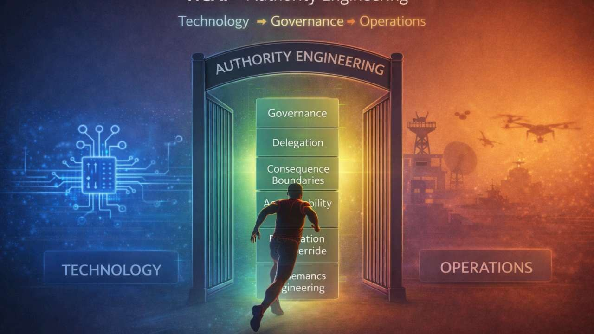

The key article for Data Flow Mapping: why AI-generated work needs mapped execution paths and embedded authority validation.
Read The Execution Authority GapInsights
The thinking behind AI data flow mapping.
These posts show why ControlPointAI starts with flow: AI recommendations, summaries, agents, interfaces, and analysis can move through connected systems faster than authority can validate them. That is the AI execution authority gap.
Recommended Path
Start with the pieces that explain the mapping model.
If you are evaluating whether ControlPointAI applies to your organization, these three posts give the shortest route from concept to execution-flow risk.
The moment where AI capability must meet authority validation before it becomes action.
Read The Control PointHow unreviewed assumptions can quietly re-enter the work unless approvers know what to audit.
Read Unauthorized Concept Drift
Through-Line
Execution-flow visibility is the pattern underneath the archive.
Across the archive, ControlPointAI returns to one operating question: when AI influences real work, can the organization see where that work moves before it becomes action?
See servicesPublication Archive
Read the full body of work.
Every available newsletter is included here as a readable article, organized from newest to oldest by default. Use the filters to follow a specific thread in the ControlPointAI framework.
Core Themes
The archive is organized around operational authority problems, not platform trends.
Runtime AuthorityApproval must be re-validated before changed conditions affect action.
Informed ApprovalAI can recommend, detect, and summarize. Accountable humans still need review standards.
Traceable BaselinesFramework terms, requirements, and decisions need source authority and rejection memory.
Interface GovernanceProduct prompts and context controls can alter outcomes even when the model is not wrong.
Want to map an AI-influenced workflow?
Send a short note about the AI-influenced workflow, connected systems, or authority concern you have in mind. If there is a fit, ControlPointAI can suggest the right next step.